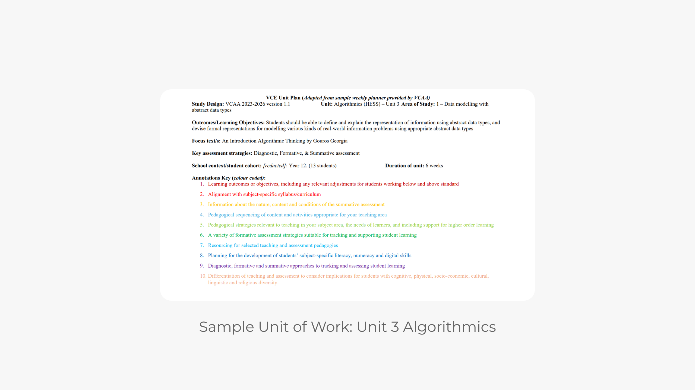
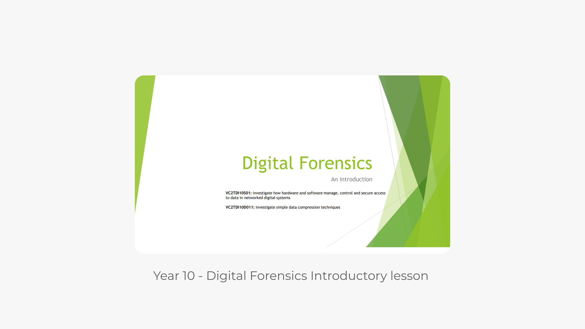
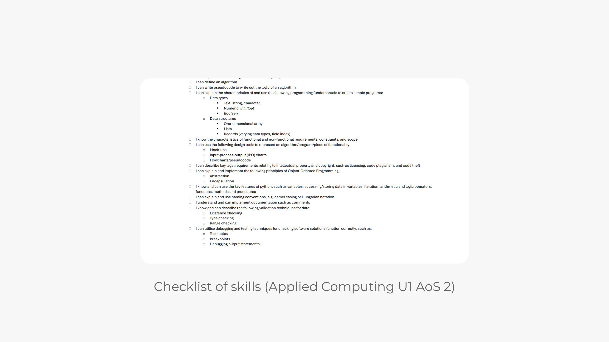
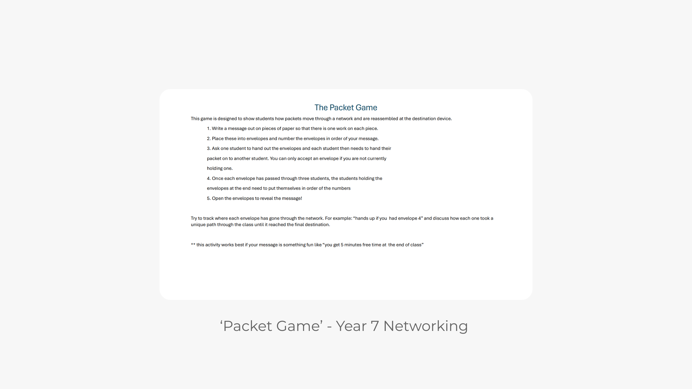

The focus of this unit plan is Unit Three, Area of Study one 'Data Modelling with Abstract Data Types'. This was written with the intention to be the first topic students complete as the key knowledge learned will underpin the rest of units 3 and 4.

These powerpoint slides contain an introductory lesson on digital forensics for year 10 students. I created and delivered this as a part of a recent professional placement.

this is a checklist to provide students for the subject Applied Computing - Unit 1, Area of Study 2: Programming. adapted from the VCAA study design

This activity was created for the digital systems content area for level 7 in the Victorian curriculum. It teaches students how information is passed between digital systems over a network. It demonstrates how packets move through a network and are re-assembled at the destination.